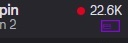

Twitch Previews Updated!
New Feature!
Persistent Preview (chrome's PIP (picture in picture)) - available when in video preview mode

When hovering over a streamer's card on the left, an small button will appear under the viewcount (like in the picture above).
* The button will appear with a small delay - the preview must be playing the stream before PIP is activated.
Click the button and chrome's PIP will activate with the selected stream.
* You can instantly change the PIP to another stream by clicking the button on another streamer's card without closing the current first.
* You can still use the regular preview feature at the same time (by hovering streamer cards).
* If you have a Twitch tab currently opened - refresh it.
If you like this extension, consider supporting the developer and sharing the extension with others :)